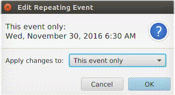

iCalendarAgenda is an open-source iCalendar control written in Java. It creates and edits calendar components that comply with iCalendar RFC 5545 (e.g. VEVENT, VTOTO and VJOURNAL). iCalendarFx is the iCalendar model used in iCalendarAgenda. There is complete support for VEVENT. However, VTODO and VJOURNAL can be displayed and edited, but not created. It is an extension of JFXtras' Agenda. It utilizes features of Java 8 and JavaFx.
Simple Example
The ICalendarAgenda constructor requires a VCalendar argument. The VCalendar stores all calendar elements. The simple JavaFx application below displays an empty ICalendarAgenda which can have events added to it.
public class ICalendarAgendaSimpleTrial1 extends Application
{
@Override
public void start(Stage primaryStage) {
VCalendar vCalendar = new VCalendar();
ICalendarAgenda agenda = new ICalendarAgenda(vCalendar);
BorderPane root = new BorderPane();
root.setCenter(agenda);
Scene scene = new Scene(root, 1366, 768);
primaryStage.setScene(scene);
primaryStage.show();
}
}
Recommended Setup
The above example relies on the default Organizer and UID Generator Callback. It is recommended that those properties be changed.
Organizer Property
ICalendarAgenda creates and modifies calendar components by sending iTIP messages to iCalendarFx for processing. ITIP messages require the ORGANIZER property to be set. There is a default organizer value in ICalendarAgenda so it will work without it being set. However, it should be set to the email address of the calendar user. All calendar components created by ICalendarAgenda have the ORGANIZER property set to this value. It can be set by chaining during ICalendarAgenda object creation or via a setter. An example using a setter is below.
VCalendar myCalendar = new VCalendar();
ICalendarAgenda myAgenda = new ICalendarAgenda(myCalendar);
myAgenda.setOrganizer("mailto:david.bal37@gmail.com");
For the example above, any calendar component created by myAgenda will have the following property line:
ORGANIZER:mailto:david.bal37@gmail.com
UID Generator Callback
The UID Generator Callback is a Callback<Void, String>. It provides UID values for created components. The default one just supplies a string containing the date, a counter, and jfxtras.org. An example of a custom one is below:
Callback uidCallback = (Void) ->
LocalDateTime.now().toString() + "-" +
processId() + "-" + // notional method to return unique process id value
eventCounter() + // notional method to return sequential event counter
".myapp.com";
agenda.setUidGeneratorCallback(uidCallback);
Add Components Graphically
Calendar components can be created by graphically interacting with the Agenda control. The following animations demonstrate the graphical addition process. The calendar component created are in the captions:
The following properties can be changed graphically:
Change date/time
Change end time
Move to full-day
Move to time-based
The start and end date/time can be changed by dragged to a new date/time. The end time can be changed by grabbing and moving the line at the bottom of the recurrence. A time-based recurrence can be made whole day and a whole day recurrence can be made time-based.

If the recurrence belongs to a repeatable series then the scope of the change needs to be specified. A dialog to prompt the user for a selection will appear. There are three options. First, the change can apply to the "this event only." In that case a new calendar event is created with the same UID and a new RECURRENCE-ID property specifying the recurrence its replacing. The original event is unchanged. Second, the change can apply to "this and future events" by creating a new event that starts on the selected recurrence. Also, an UNTIL property is added to the original event's RRULE. Third, the change can be applied to "all events in series" - which simply makes all changes to the original event.
A popup to do advanced changes can be opened in three ways
Click Edit in the new event dialog
Right-clicking on a recurrence
By left-clicking on a recurrence and clicking the edit button.
The edit popup can modify the following properties. The iCalendar property name is in parenthesis.
Appointment Tab
Start time (DTSTART)
End time (DTEND)
Summary (SUMMARY)
Description (DESCRIPTION)
Location (LOCATION)
Category (CATEGORIES)
Only one category supported
Can be associated with a color that is used to render the background of instances in agenda
Repeatable Tab
Recurrence Rule (RRULE)
Repeat Frequency (FREQUENCY)
Repeat every (INTERVAL)
Date to end on (UNTIL)
End after a number of events (COUNT)
Exception date/times (EXDATE)
When the frequency is weekly, check boxes for each day of the week appears. When the frequency is monthly checkboxes for day of month or day of week appear. A simple-language explanation of the repeat rule is displayed in the summary field
Events can be deleted in three ways. First, they can be deleted by selecting them and pressing the delete key. Second, you can click delete from the selected recurrence dialog. Third, You can click delete from the edit popup.
If the event is repeatable then a dialog is displayed to prompt the user to specify the scope of the deletion - just like for repeatable edits. The delete dialog has three options. First, is "this event only" - which adds an EXDATE property. The second is "this and future events." This options adds an UNTIL element to the RRULE. The third options is "all events in the series." This option entirely removes the event - it's deleted from the Vcalendar.
The animation to the right show the different delete options and the resulting iCalendar content.
Add Components via iTIP Messages
When the main VCalendar processes an iTIP PUBLISH message the calendar components are automatically displayed on Agenda. The below example shows this feature:
The result of the processing the above iTIP message is the addition of a 2-hour weekly Friday event that is automatically displayed on Agenda.
Note: To obtain the above described behavior, the ICalendarAgenda object must be added to a shown scene. See the example under the Usage section for an example.
Changing Components with iTIP Message
Components, and the displayed instances in agenda, can be changed by processing iTIP messages. In fact, ICalendarAgenda performs all changes, either graphical or through the edit popup, by creating iTIP messages to be processed by the main VCalendar object. The VCalendar doesn't know the source of the iTIP message. iCalendarAgenda listens to any changes to the VCalendar's events and automatically displays the changes.
For example, events can be imported from a different calendaring system such as Google Calendar.
For more information please see my YouTube videos: